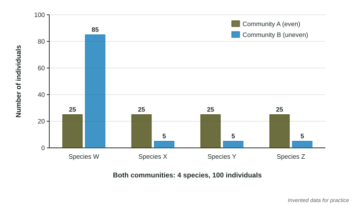

Introduction to Biodiversity
Biodiversity is variety at three levels: genes within a population, species within a community, and habitats within an area.
Part 1 · Hook
Why this matters
Part 2 · Before you start
What this builds on
Part 3 · Prerequisite check
Quick check before you start
1. What is a community in ecology?
- All the populations of different species living in one area
- All the members of one species in one area
- The nonliving parts of an area
- One organism and its habitat
Show the answer
A community is every population of every species that shares an area; a population is one species.
- Correct: All the populations of different species living in one area:
- All the members of one species in one area:
- The nonliving parts of an area:
- One organism and its habitat:
2. In a food web, what usually happens to a herbivore population when its main predator is removed?
- It increases, because fewer are eaten
- It decreases, because predators help it
- It stays the same
- It becomes a producer
Show the answer
With less predation, more herbivores survive and the population grows, which then puts more pressure on the plants they eat.
- Correct: It increases, because fewer are eaten:
- It decreases, because predators help it:
- It stays the same:
- It becomes a producer:
Part 4 · See it
See it first

Part 5 · Step by step
How it works, step by step
- A population, a community or an area has more variety (genes, species or habitats)there are more different traits and more species that can do each job in the ecosystem
- A disease, a drought or a new predator strikessome individuals or species are likely to survive it, because they differ from the ones that are hurt
- The survivors keep reproducing and keep doing their jobs (pollinating, decomposing, feeding others)the population or ecosystem recovers faster than a less diverse one would
Part 6 · Key ideas
Key ideas
- Biodiversity has three levels: genetic diversity (variety of genes in a population), species diversity (variety of species in a community) and habitat diversity (variety of habitats in an area).
- Species diversity has two parts: species richness, the number of different species, and species evenness, how equal their population sizes are. More of either means more diversity.
- A population bottleneck is a sharp drop in population size. The survivors carry only part of the original gene variety, so genetic diversity stays low even after numbers recover.
- A keystone species has a much larger effect on its community than its numbers suggest; removing it changes the whole community.
Part 7 · Misconception
A common mistake
The wrong idea: A community with more individuals is more diverse.
What actually happens: Diversity counts kinds and their balance, not head counts. 1,000 animals of one species are less diverse than 100 animals spread evenly over ten species.
Part 8 · Check yourself
Check yourself
Exam-style questions. Anything you miss goes into your review queue.
Data
Animals netted in three ponds
| Species | North Pond | East Pond | South Pond |
|---|---|---|---|
| Dragonfly larva | 50 | 5 | 40 |
| Pond snail | 48 | 185 | 40 |
| Frog tadpole | 52 | 5 | 40 |
| Diving beetle | 50 | 5 | 40 |
| Water strider | 0 | 0 | 40 |
| Mayfly larva | 0 | 0 | 40 |
| Total | 200 | 200 | 240 |
1. Which pond has the greatest species richness?
- South Pond
- North Pond
- East Pond
- North and East Pond tie for most
Show the answer
Species richness is the number of different species. South Pond has six, North and East have four each.
- Correct: South Pond: Right: South Pond has six species; the other two ponds have four each.
- North Pond: North Pond has four species. Its numbers are even, but richness counts species, not balance.
- East Pond: East Pond has four species, and most of its animals are one snail.
- North and East Pond tie for most: They tie at four species each, but South Pond has six.
2. North Pond and East Pond have the same number of species and the same total number of animals. Which statement compares their species diversity correctly?
- East Pond is more diverse, because it has the most snails
- North Pond is more diverse, because its species are much more even
- They are equally diverse, because their species richness and total number of animals are equal
- East Pond is more diverse, because snails are decomposers
Show the answer
With equal richness, the more even community is the more diverse one.
- East Pond is more diverse, because it has the most snails: A large count of one species makes a community less even, so less diverse.
- Correct: North Pond is more diverse, because its species are much more even: Right: richness is equal, so evenness decides. North Pond has about 50 of each species; East Pond is 185 snails out of 200.
- They are equally diverse, because their species richness and total number of animals are equal: Equal richness is half the story; evenness differs a lot between the two ponds.
- East Pond is more diverse, because snails are decomposers: What a species eats does not set diversity; the number of species and their evenness do.
3. A disease arrives that kills most individuals of one species, whichever species it is. In which pond is the community as a whole most likely to keep working much as before?
- East Pond, because it has the most individuals of one species
- North Pond, because it has fewer species to infect
- South Pond, because each species is a small share of a rich, even community
- The three ponds about equally, because each one has at least four different species
Show the answer
A richer, more even community spreads its functions across more species, so losing one changes less.
- East Pond, because it has the most individuals of one species: If the disease hits the snail, East Pond loses over 90% of its animals at once.
- North Pond, because it has fewer species to infect: Fewer species means each one is a bigger share of the community, so losing one hurts more.
- Correct: South Pond, because each species is a small share of a rich, even community: Right: losing one of six evenly sized species removes about a sixth of the animals, and the other five keep their roles going.
- The three ponds about equally, because each one has at least four different species: Richness and evenness differ among the ponds, and both affect how much one loss matters.
Passage
A seal population that came back
By the 1890s, hunting for their oil had cut northern elephant seals down to one small colony, perhaps a few dozen animals, on an island off the coast of Mexico. Once hunting stopped, the colony grew, and today more than 200,000 of these seals breed along the coasts of Mexico and California. Researchers compared DNA from living seals with DNA from museum skins collected before the hunting began. The living seals carry far less genetic variety than their ancestors did. A comeback in numbers, the researchers argue, can hide a loss that lasts: a population descended from so few survivors may cope poorly with a new disease or a change in its ocean.
Invented passage for practice, summarizing published studies of northern elephant seals (DNA from museum specimens; population counts near 225,000 in 2010).
4. Which statement best expresses the main claim of the passage?
- Hunting for seal oil is still the main threat to northern elephant seals
- Museum skins are a better source of DNA than living animals
- Once a population passes 200,000 animals it has regained as much genetic variety as it ever had
- Numbers can recover while genetic diversity stays low, leaving the seals vulnerable
Show the answer
The claim is that numbers came back but genetic diversity did not, and that this matters for the future.
- Hunting for seal oil is still the main threat to northern elephant seals: The passage says the hunting stopped; it is not the current threat.
- Museum skins are a better source of DNA than living animals: Museum skins were used to compare past and present, not because they are better.
- Once a population passes 200,000 animals it has regained as much genetic variety as it ever had: This is the opposite of the passage, which says genetic variety stayed low.
- Correct: Numbers can recover while genetic diversity stays low, leaving the seals vulnerable: Right: the passage ends on this argument, and the DNA study supports it.
5. Which evidence in the passage most directly supports the claim that the seals lost genetic variety?
- DNA from living seals compared with DNA from skins collected before hunting
- The large number of seals now breeding along the coasts of both Mexico and California
- The fact that hunting ended and the colony grew
- Where the last colony survived in the 1890s
Show the answer
Only the DNA comparison measures genetic variety before and after the bottleneck.
- Correct: DNA from living seals compared with DNA from skins collected before hunting: Right: this before-and-after comparison measures the genetic variety that was lost.
- The large number of seals now breeding along the coasts of both Mexico and California: A large population today says nothing about its genes; the passage stresses that.
- The fact that hunting ended and the colony grew: The recovery explains the numbers, not the genetic loss.
- Where the last colony survived in the 1890s: The island location does not measure genetic variety.
6. Sea otters eat sea urchins, and sea urchins eat kelp, a large seaweed that forms underwater forests where many fish live. Hunters remove the otters from a coast. Which outcome is most likely?
- Urchins decrease, because otters had been protecting them from other predators
- Kelp increases, because otters had been eating the kelp
- Fish increase, because otters had been competing with them for kelp
- Urchins increase, kelp forests shrink, and fish that shelter in kelp decline
Show the answer
Sea otters are a classic keystone species: their effect on the whole community is far larger than their numbers.
- Urchins decrease, because otters had been protecting them from other predators: Otters eat urchins; removing otters lets urchins increase.
- Kelp increases, because otters had been eating the kelp: Otters eat urchins, not kelp; kelp declines when urchins multiply.
- Fish increase, because otters had been competing with them for kelp: Fish lose their kelp habitat, so they decline rather than increase.
- Correct: Urchins increase, kelp forests shrink, and fish that shelter in kelp decline: Right: removing the predator releases the urchins, which overgraze kelp, and the habitat for fish goes with it.
7. Which events would lower the genetic diversity of a population? Select all that apply.
- A flood kills 95% of the population at random
- The population stays small and isolated for many generations
- Individuals from a different population of the same species join it and breed
- The population doubles in size over ten years with plenty of food
Show the answer
Genetic diversity falls when variants are lost: a bottleneck, or a small population cut off from others.
- Correct: A flood kills 95% of the population at random: Right: a bottleneck leaves only the genes the survivors carried.
- Correct: The population stays small and isolated for many generations: Right: in a small isolated population, gene variants are lost by chance and none arrive from outside.
- Individuals from a different population of the same species join it and breed: New breeding members bring new gene variants, which raises genetic diversity.
- The population doubles in size over ten years with plenty of food: Growth from the same gene pool does not remove variety, so diversity does not fall.
Part 9 · Summary
Summary
Part 10 · Up next
What comes next
Part 11 · Connections